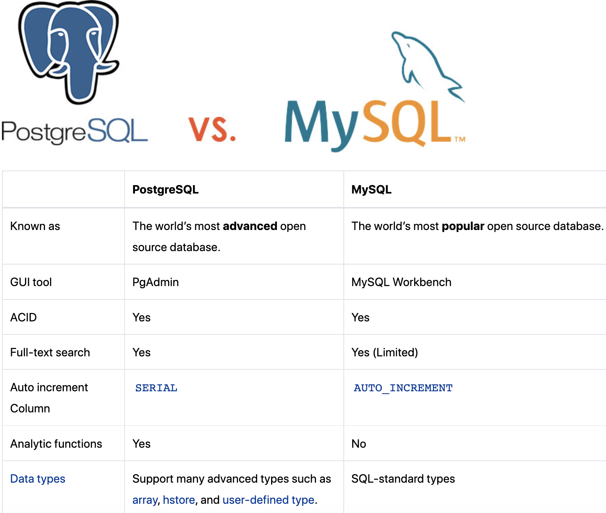
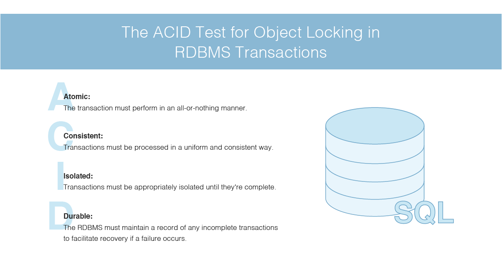
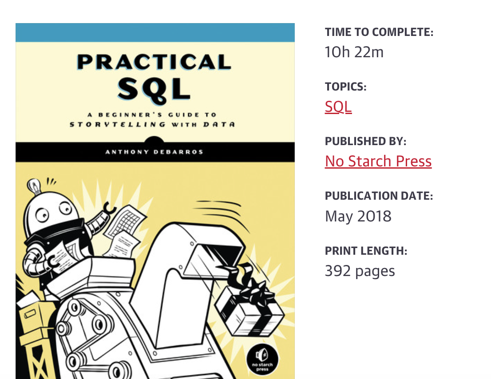

PostgreSQL and MySQL#
Relational DBMS#
Relational database management systems (RDBMS) support the relational (=table-oriented) data model
The relation schema (schema of a table) is defined by the table name and a fixed number of attributes with fixed data types
A record (entity) = a row in the table and consists of the values of each attribute
A relation = a set of uniform records
 Source: https://db-engines.com/en/ranking
Source: https://db-engines.com/en/ranking
MySQL and PostgreSQL are the top two open source relational databases.
Note
MySQL has been famous for its ease of use and speed, while PostgreSQL has many more advanced features, which is the reason that PostgreSQL is often described as an open-source version of Oracle (Source: https://www.postgresqltutorial.com/postgresql-vs-mysql/)

For more information, see https://www.postgresqltutorial.com/postgresql-vs-mysql/

Source: https://www.dnsstuff.com/database-locking#the-acid-test
Architecture#
Source: https://www.fivetran.com/blog/postgresql-vs-mysql
PostgreSQL is an object-relational database, while MySQL is purely relational:
PostgreSQL offers more complex data types and allows objects to inherit properties, but it also makes working with PostgreSQL more complex
Three common database features are views, triggers, and stored procedures:
PostgreSQL has more robust views, and supports materialized views, which can improve performance for complex queries
Data Types#
Postgres offers a wider variety of data types than MySQL:
For basic character and numeric data types, both databases will suit your choice
PostgreSQL vs. MySQL#
Source: https://www.fivetran.com/blog/postgresql-vs-mysql
If you are developing an application with a database back end, which of the two should you use?
Consider PostgreSQL:
for any application that might grow to enterprise scope, with complex queries and frequent write operations
Consider MySQL:
If you do not expect your application to scale up
If you are looking for a quick tool for prototyping
MySQL is more widely used than PostgreSQL, more developers and DBAs are familiar with it, and more third-party tools are available for it
Note
The most common application of MySQL is in data storage for web services, which makes MySQL the basis of many dynamic web presences such as YouTube, Facebook and Twitter.
The number of companies implementing projects with PostgreSQL is growing. Innovative companies such as Apple, Netflix or Spotify are just some of the best-known users of PostgreSQL.
Summary#
Generally, MySQL is typically recommended for web-based/online or mapping functions
PostgreSQL is recommended for large analytical processes
MySQL is rather lightweight and reliable
PostgreSQL is super extensible and very feature rich
Postgres Practice#
Practical Textbook
Install PostgreSQL with pgAdmin 
Interactive Online Practice
No installation